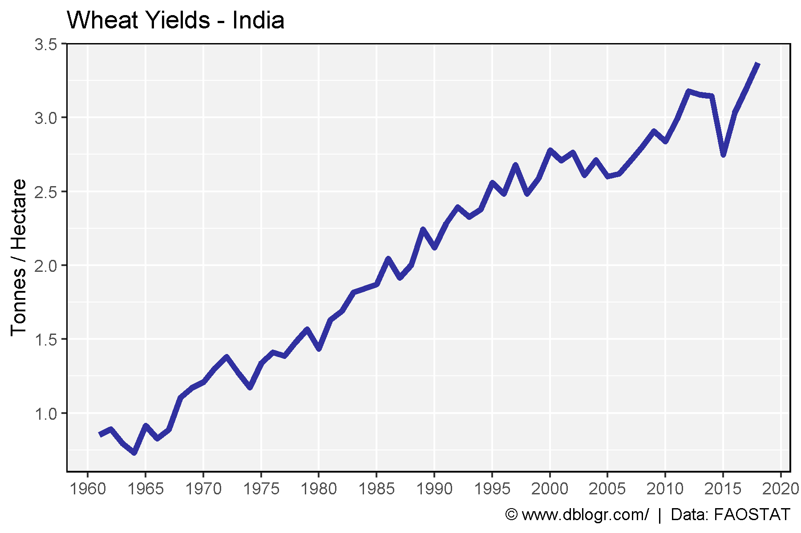
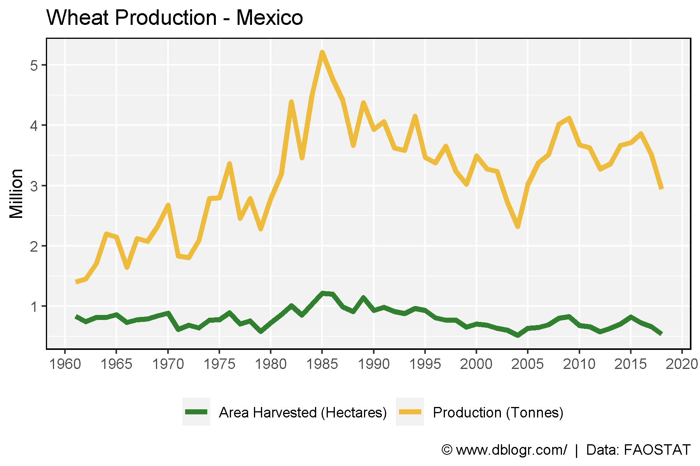
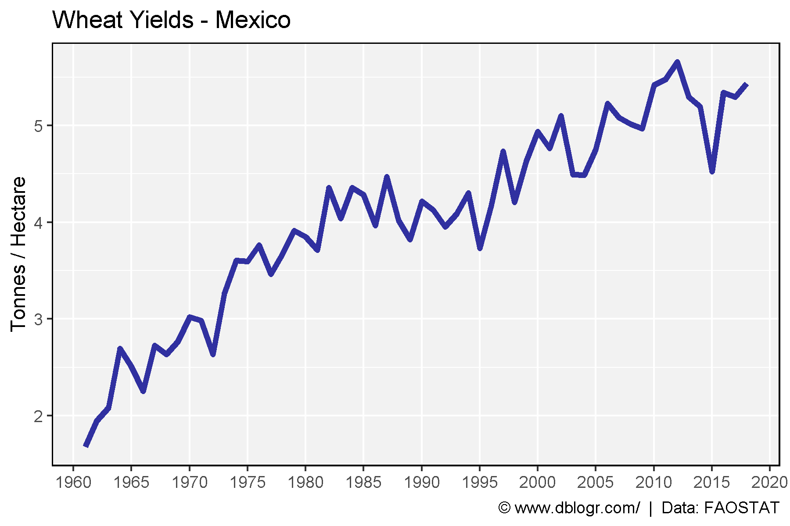

All Data - PDF
# Prep data
colors <- c("darkgreen", "darkred", "darkgoldenrod2")
areas <- c("World",
levels(agData_FAO_Country_Table$Region),
levels(agData_FAO_Country_Table$SubRegion),
levels(agData_FAO_Country_Table$Country))
xx <- agData_FAO_Crops %>%
filter(Crop == "Wheat") %>%
mutate(Value = ifelse(Measurement %in% c("Area harvested","Production"),
Value / 1000000, Value),
Unit = plyr::mapvalues(Unit, c("hectares","tonnes"),
c("Million hectares","Million tonnes")))
areas <- areas[areas %in% xx$Area]
# Plot
pdf("wheat_fao.pdf", width = 12, height = 4)
for(i in areas) {
print(ggplot(xx %>% filter(Area == i)) +
geom_line(aes(x = Year, y = Value, color = Measurement),
size = 1.5, alpha = 0.8) +
facet_wrap(. ~ Measurement + Unit, ncol = 3, scales = "free_y") +
theme_agData(legend.position = "none",
axis.text.x = element_text(angle = 90, hjust = 1, vjust = 0.5)) +
scale_color_manual(values = colors) +
scale_x_continuous(breaks = seq(1960, 2020, by = 5) ) +
labs(title = i, y = NULL, x = NULL,
caption = "\xa9 www.dblogr.com/ | Data: FAOSTAT") )
}
dev.off()
## png
## 2
India
Yield
# Prep data
xx <- agData_FAO_Crops %>%
filter(Crop == "Wheat", Area == "India", Measurement == "Yield")
# Plot yield data
mp <- ggplot(xx %>% filter(Measurement =="Yield"), aes(x = Year, y = Value) ) +
geom_line(size = 1.5, alpha = 0.8, color = "darkblue") +
scale_x_continuous(breaks = seq(1960, 2020, 5), minor_breaks = NULL) +
theme_agData() +
labs(title = "Wheat Yields - India", y = "Tonnes / Hectare", x = NULL,
caption = "\xa9 www.dblogr.com/ | Data: FAOSTAT")
ggsave("wheat_india_01.png", mp, width = 6, height = 4)

Area and Production
# Prep data
xx <- agData_FAO_Crops %>%
filter(Crop == "Wheat", Area == "India", Measurement != "Yield")
# Plot production data
mp <- ggplot(xx, aes(x = Year, y = Value/1000000, color = Measurement) ) +
geom_line(size = 1.5, alpha = 0.8) +
scale_x_continuous(breaks = seq(1960, 2020, 5), minor_breaks = NULL) +
scale_color_manual(name = NULL,
labels = c("Area Harvested (Hectares)", "Production (Tonnes)"),
values = c("darkgoldenrod2", "darkgreen")) +
theme_agData(legend.position = "bottom") +
labs(title = "Wheat Production - India", y = "Million", x = NULL,
caption = "\xa9 www.dblogr.com/ | Data: FAOSTAT")
ggsave("wheat_india_02.png", mp, width = 6, height = 4)

Mexico
Yield
# Prep data
xx <- agData_FAO_Crops %>%
filter(Crop == "Wheat", Area == "Mexico", Measurement != "Yield")
# Plot production data
mp1 <- ggplot(xx, aes(x = Year, y = Value / 1000000, color = Measurement) ) +
geom_line(size = 1.5, alpha = 0.8) +
theme_agData(legend.position = "bottom") +
scale_color_manual(name = NULL, values = c("darkgreen", "darkgoldenrod2"),
labels = c("Area Harvested (Hectares)", "Production (Tonnes)")) +
scale_x_continuous(breaks = seq(1960, 2020, 5), minor_breaks = NULL) +
labs(title = "Wheat Production - Mexico", y = "Million", x = NULL,
caption = "\xa9 www.dblogr.com/ | Data: FAOSTAT")
ggsave("wheat_mexico_01.png", mp1, width = 6, height = 4)

Area and Production
# Prep data
xx <- agData_FAO_Crops %>%
filter(Crop == "Wheat", Area == "Mexico", Measurement == "Yield")
# Plot yield data
mp2 <- ggplot(xx %>% filter(Measurement == "Yield"), aes(x = Year, y = Value) ) +
geom_line(size = 1.5, alpha = 0.8, color = "darkblue") +
scale_x_continuous(breaks = seq(1960, 2020, 5), minor_breaks = NULL) +
theme_agData() +
labs(title = "Wheat Yields - Mexico", y = "Tonnes / Hectare", x = NULL,
caption = "\xa9 www.dblogr.com/ | Data: FAOSTAT")
ggsave("wheat_mexico_02.png", mp2, width = 6, height = 4)

© Derek Michael Wright www.dblogr.com/